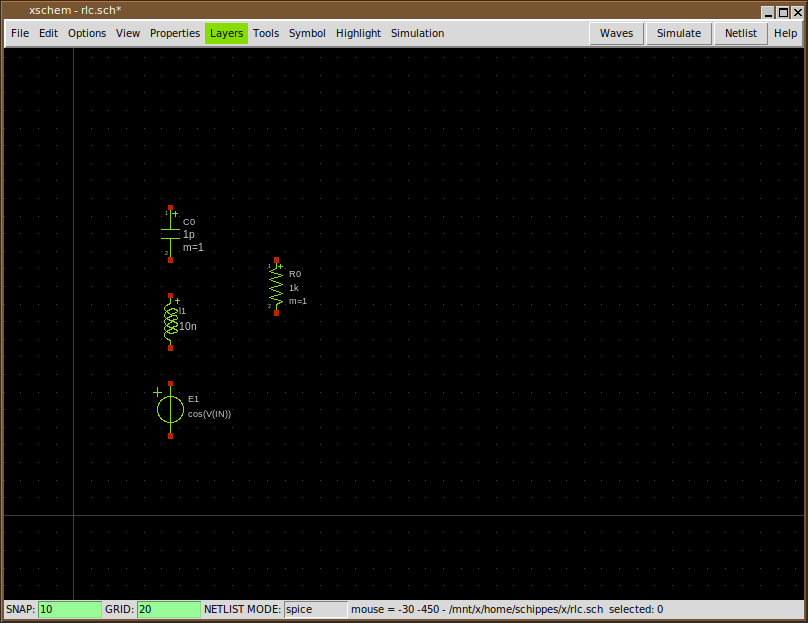
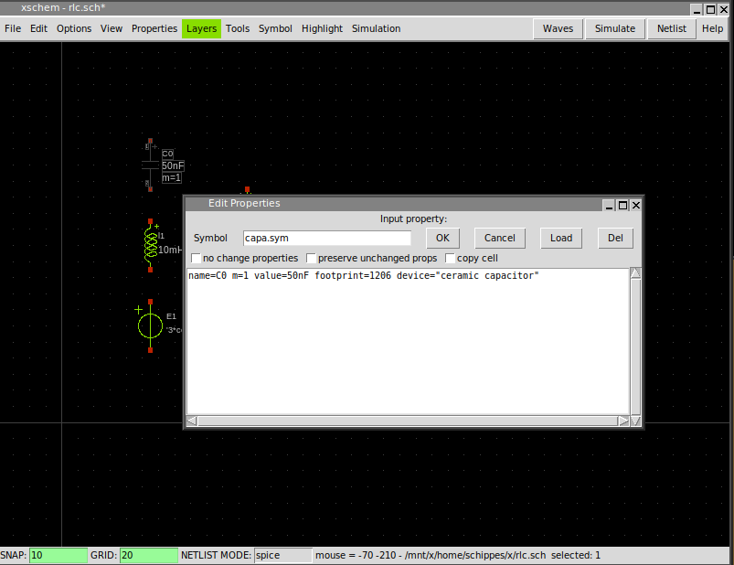
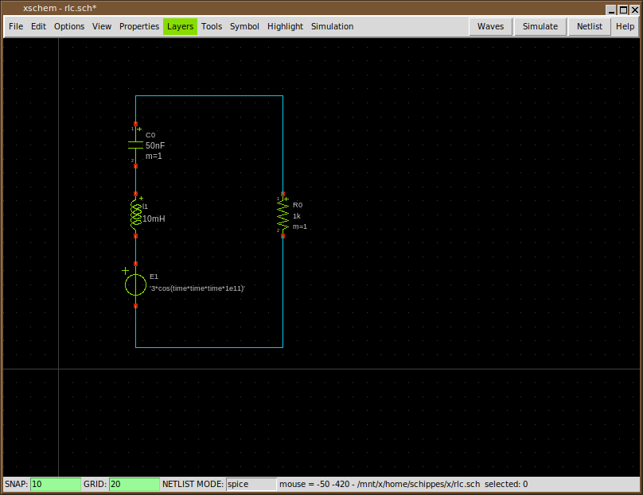
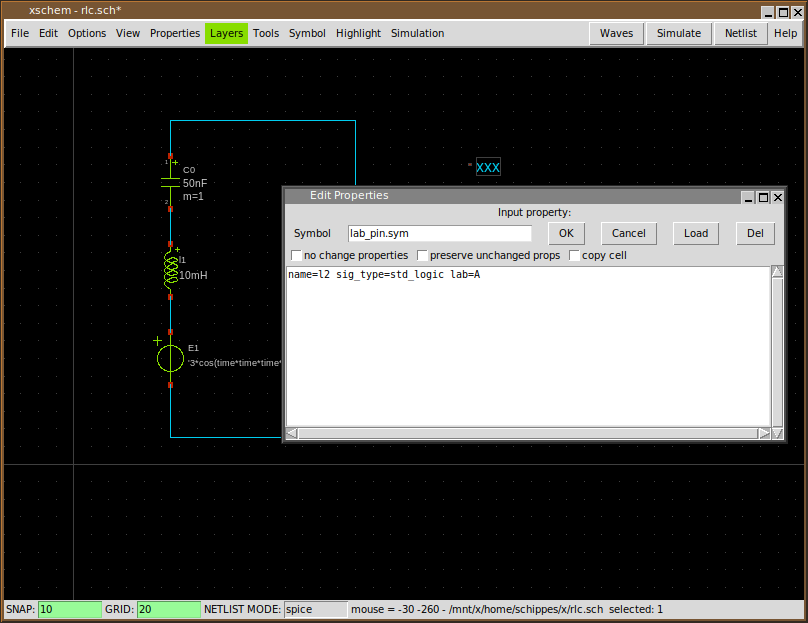
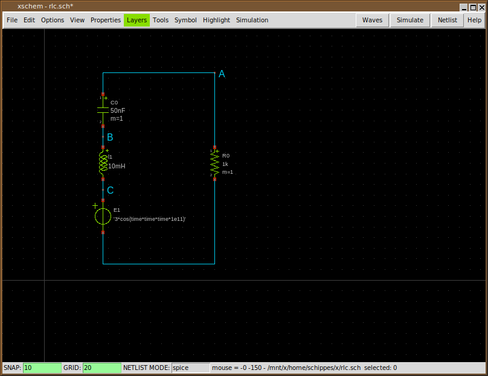
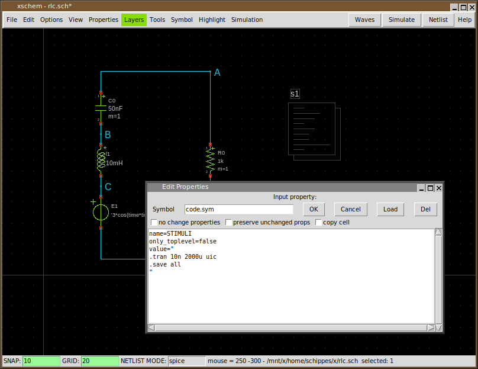
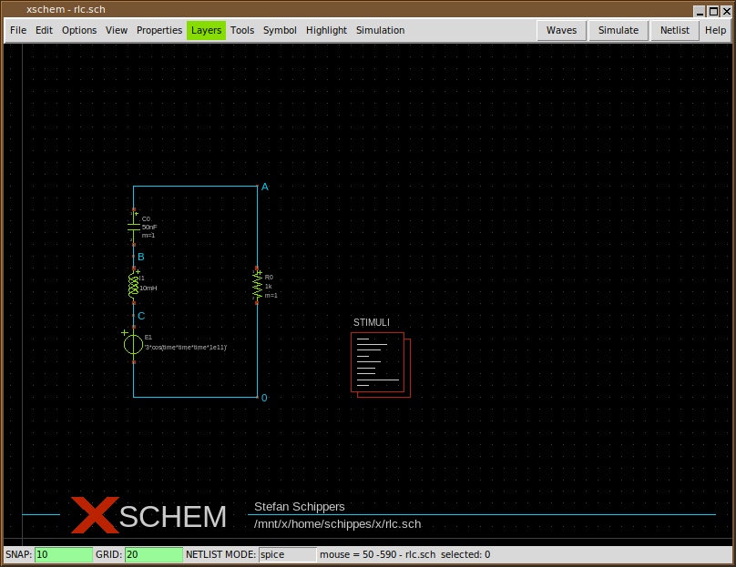
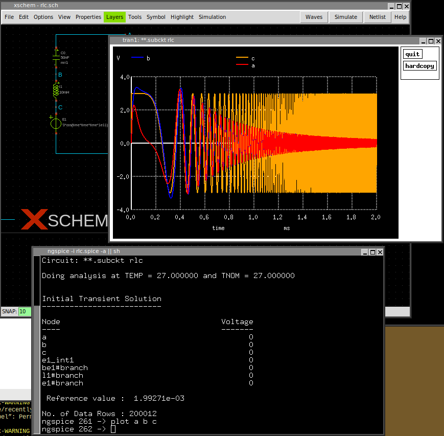

TUTORIAL: RUN A SIMULATION WITH XSCHEM
here some instructions to create a schematic and run a ngspice transient sim in XSCHEM:
- Build and install xschem from svn head.
- Create some empty directory (in my examples i use ~/x)
- cd ~/x
- ~/bin/xschem rlc.sch (use the actual xschem install path). xschem will warn you that the rlc.sch file does not exist. No problem.
- Press Insert key
- Navigate in the file selector to .../share/xschem/xschem_library/devices
- Select 'capa.sym' and press 'Open'
- Select the capacitor, press 'm' and place it somewhere
- Press 'Insert' again and place 'res.sym' and then again 'ind.sym'
- Again, press 'Insert' and place 'vsource_arith.sym'
- By selecting (left btn click) and moving ('m') place the components like in this picture: 
- Press the right mouse button on the capacitor and set its 'value=' attribute to 50nF: 
- Do the same for the inductor (10mH) and the resistor (1k)
- Set the voltage source VOL to: "'3*cos(time*time*time*1e11)'" (include quotes, single and double):
- Pressing the 'w' key and moving the mouse you draw wires, wire the components as shown (press 'w', move the mouse and click, this draws a wire segment): 
- Press 'Insert key and place one instance of 'lab_pin', then use the right mouse button to change its 'lab' attribute to A: 
- Move the label as shown, (you can use 'F' to flip and 'R' to rotate), then using 'c' copy this pin label and edit attributes to create the B and C labels, place all of these as shown: 
- Select the 'C' label and copy it as shown here, set its lab attribute to 0 (this will be the 0V (gnd node))
- Press 'Insert key, place the 'code.sym' symbol, set name and value attributes as follows: 
- Cosmetics: add 'title.sym' move the circuit (by selecting it dragging the mouse and pressing 'm', if needed). Note that you can do a 'stretch move'operation if you need move components keeping the wires attached; refer to the xschem manual here 
- The circuit is ready for simulation: press 'netlist' the 'rlc.spice' will be generated in current dir.
- If ngspice is installed on the system press 'Simulate':
- In the simulator window type 'plot a b c': 
- If you set 'Simulation -> Configure simulators and tools -> Ngspice Batch' and press 'Simulate' again the sim will be run in batch mode, a 'rlc.raw' file will be generated and a 'rlc.out' file will contain the simulator textual output.